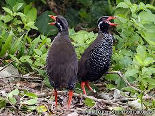
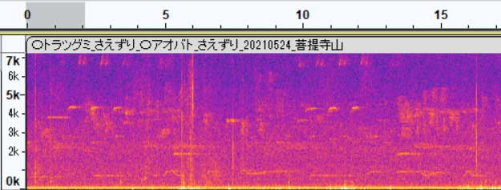
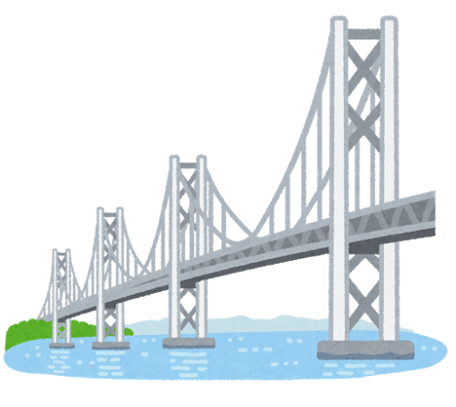
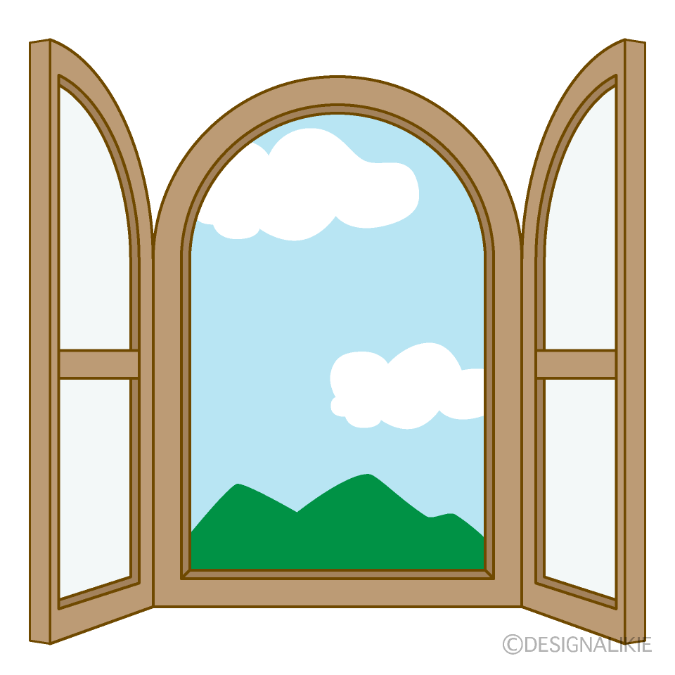

| 私は、１９９８年１２月に熊本県南部の小さな町で生まれました。 ５人兄弟の末っ子で、よく外で遊びケガばかりしていたと聞いています。 |
| 高校から熊本高専に通い、土木専門に７年間勉強していました。 高専の卒業研究では、pythonの機械学習ライブラリを使って ヤンバルクイナの鳴き声を識別するプログラムを作っていました。 その時初めて、自分から進んで勉強をした瞬間でした。 |

 |
| その後は大学院へ進学し、橋の振動データから構造解析をする研究をしていました。 現在は、会社で土木工事の設計や施工管理、その他協議の調整をする仕事をしています。 |  |
| 現在の会社は、自分が学んだ専門分野を生かしたいと思い就職しましたが、 周りの人々はもっと熱意を持って取り組んでおられ、自分との差を改めて実感しました。 そして、その人達と自分との差は何か考えた時、興味を持っているかどうかが大きな差だと感じました。 興味があることは自分から調べ、細かいところまで知りたいという積極的な行動が生まれます。 それによって１０年後、２０年後に大きな武器に生まれ変わると僕は思います。 私も好きな分野で興味を持ってスキルアップしていきたいと考え、 学生時代に興味を持って取り組んでいたプログラミングの世界に入ることを決意しました。 まだまだ勉強中の身ですが、これから始まる新たな挑戦にワクワクしています。 |  |